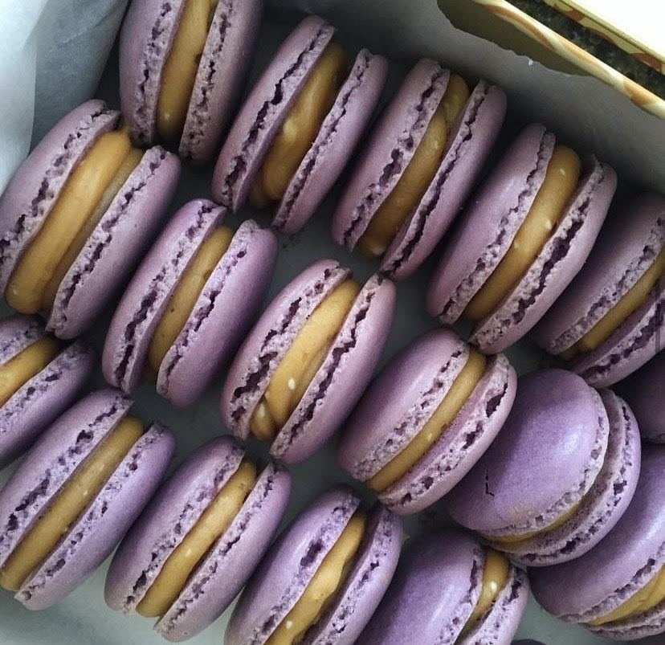

***don't want to make thin mint macarons, just remove the mint coloring and chocolte drizzle to have the good ol' classic macaron!
|

Do you love ube AND macarons! Well is the macaron to make. The nuttiness of the ube pairs perfectly well with the subtle sweetness of the caramel. In order to make this type of macaron add 1/6 of a teaspoon of ube extract in the beginning of step 4. And instead of making vanilla custard as the filling, use store or home made caramel to complete the macaron sandwich. |

Dreaming of simpler times where you would set up a lemonade stand outside your garage? This pink lemonade macaron takes you back to your sweet, sweet childhood. Use the same recipe as the classic vanilla macaron for the shell, but for the filling, mix lemon extract to get that tart lemony flavor. |